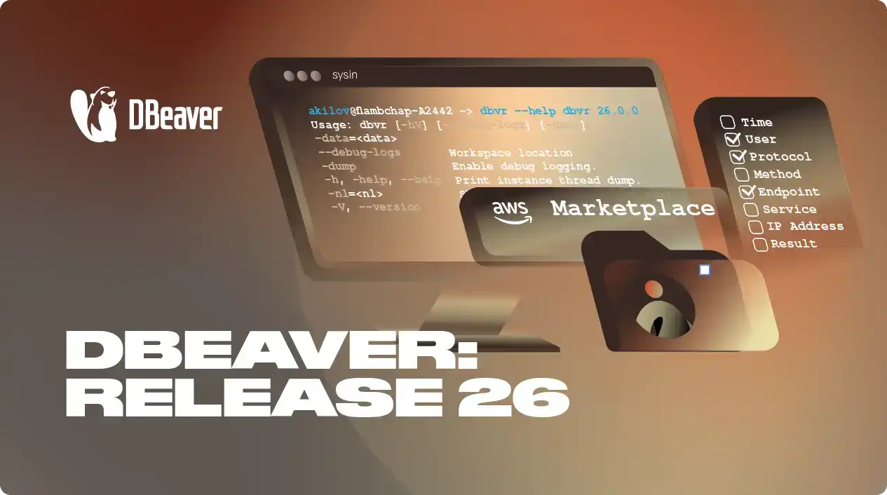
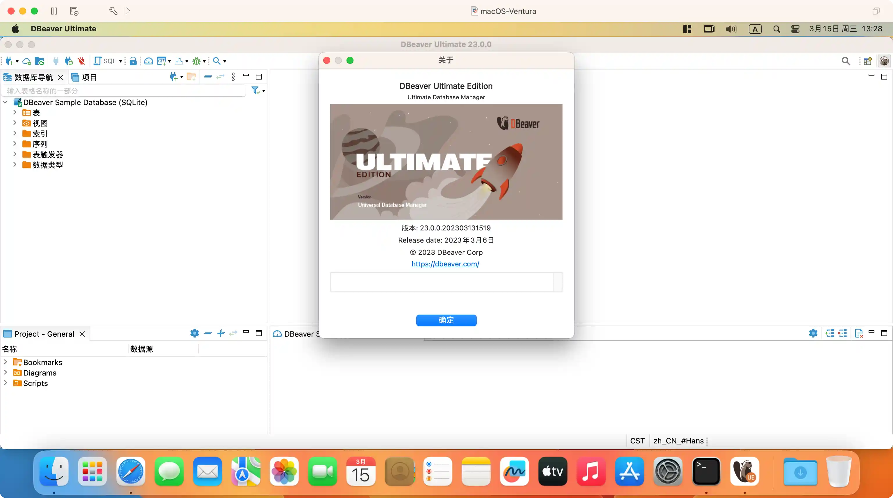

请访问原文链接：DBeaver Ultimate Edtion 26.1 Multilingual (macOS, Linux, Windows) - 通用数据库工具 查看最新版。原创作品，转载请保留出处。
作者主页：sysin.org

通用数据库工具
DBeaver 是一个通用的数据库管理工具，适用于需要以专业方式处理数据的每个人。使用 DBeaver，您可以像在常规电子表格中一样处理数据，根据来自不同数据存储的记录创建分析报告，以适当的格式导出信息 (sysin)。对于高级数据库用户，DBeaver 建议使用强大的 SQL 编辑器、大量管理功能、数据和模式迁移能力、监控数据库连接会话等等。开箱即用的 DBeaver 支持 100 多种数据库。

支持的数据库
Supported Databases
- Relational
- Analytics
- Document-oriented
- Cloud
- Big Data / Hadoop
- Key Value
- Time Series
- Graph
- Search engines
- Embedded
✅ Relational
- MySQL
The most popular open-source relational database. Now supported by Oracle. - MariaDB
Fork of MySQL, bundled on many Linux systems as default MySQL engine - PostgreSQL
The most powerful open-source relational database. - Microsoft SQL Server
Enterprise-level relational database developed by Microsoft. - Oracle
Oracle database (Express or Enterprise) is one of the most advanced relational databases. - DB2
Enterprise-level relational database developed by IBM (sysin). Supported drivers are: DB2 for LUW (Linux/Unix/Windows), DB2 for z/OS, DB2 for iSeries / AS400 - SAP® MaxDB®
DBeaver is designed for use with SAP® MaxDB® - Informix
Secure embeddable database, developed by IBM. Optimized for OLTP and IoT - Sybase®/SAP® ASE
DBeaver is designed for use with SAP® ASE (Adaptive Server Enterprise), originally known as Sybase SQL Server - Mimer SQL
Scalable and embedded database solutions conforming to ISO standards and suited for open environments - InterSystems Caché
Multipurpose relational and object-oriented DBMS - Firebird
Open source cross platform SQL relational database - Ingres
Open-source SQL relational database management system intended to support large commercial and government applications - Yellowbrick
Unveils Integrated Data Warehouse Platform - Babelfish
Open source project available under the Apache 2.0 and PostgreSQL licenses - YugabyteDB
Distributed SQL database for global, cloud-native applications with low query latency and extreme resilience against failures. - Virtuoso
Hybrid database engine that combines the functionality of a traditional RDBMS, object-relational database (ORDBMS), virtual database, RDF and XML database - CUBRID
Open source SQL-based relational database management system with object extensions - DuckDB
In-process SQL OLAP database management system - Apache Calcite Avatica
The framework for building database drivers. Avatica is defined by a wire API between a client and a server. - Apache Kylin
Open source distributed analytics engine designed to provide a SQL interface and multi-dimensional analysis on Hadoop and Alluxio, supporting extremely large datasets. - RisingWave
RisingWave is an open-source distributed SQL database for stream processing. - Denodo 8
The award-winning Denodo Platform is the leading data integration, management, and delivery platform. - Dremio
A lakehouse platform for teams that know and love SQL (sysin). - EDB
The best-in-class database management software and wide-range services with 24×7 support to get more from Postgres. - Google Cloud Spanner
The distributed SQL database management and storage service developed by Google. - H2GIS
The spatial extension of the H2 database engine in the spirit of PostGIS. - HSQLDB
The relational database management system written in Java. - InterSystems IRIS
High Performance Data Management Software - Trino
Fast distributed SQL query engine for big data analytics. - CrateDB
A distributed and scalable SQL database for storing and analyzing massive amounts of data in near real-time, even with complex queries. - Monetdb
Open-source column-oriented relational database management system. - OceanBase
An enterprise distributed relational database with high availability, high performance, horizontal scalability, and compatibility with SQL standards. - HeavyDB (OmniSciDB)
The Fastest Analytics and Location Intelligence Platform - Openedge
The relational database that lies at the core of the Progress OpenEdge application development platform. - Pervasive SQL
ACID-compliant database management system developed by Pervasive Software - Salesforce Data Cloud
Connect and unify customer data across systems, and analyze cross-channel engagement behavior. - SQream DB
The relational database management system that uses graphics processing units from Nvidia. - Fujitsu Enterprise Postgres
An exceptionally reliable and robust relational database created for organizations that require strong query performance and high availability. - Materialize
A streaming SQL database for real-time applications, live dashboards, and streaming data pipelines. - TiDB
Open-source distributed SQL database that supports Hybrid Transactional and Analytical Processing (HTAP) workloads. - Salesforce
Customer relationship management system focused on sales, customer service, marketing automation, e-commerce, analytics, and application development - Kafka (ksqlDB)
The database is purpose-built to help developers create stream-processing applications on top of Apache Kafka®. - Dameng (DM8)
Large general relational database that fully supports ANSI SQL standards and mainstream programming language interfaces/development frameworks. - Altibase
Enterprise High Performance Database that is supplied to over 700 esteemed clients including 19 Fortune Global 500 companies. - GaussDB
GaussDB is a distributed relational database from Huawei. - Cloudberry
Apache Cloudberry, built on the latest PostgreSQL 14.4 kernel, is one of the most advanced and mature open-source MPP databases available. - GBase 8s
GBase 8s is an enterprise-level relational database management system that provides stable, secure, and scalable data storage and processing capabilities for businesses. - Amazon Aurora DSQL
The fastest serverless distributed SQL database for always available applications. - Kingbase
Kingbase is an enterprise-level large-scale universal converged database for all sectors key applications. - Greengage
- The massively parallel relational DBMS based on Greenplum OSS, designed to store and process large amounts of data.
✅ Analytics
- Greenplum
Massively parallel processing database based on PostgreSQL. - Exasol
Enterprise-level in-memory analytics database - Vertica
Relational analytics database widely used in BigData applications. - Teradata
Enterprise-level analytics database. - SAP® HANA®
DBeaver is designed for use with SAP HANA®. - Netezza
IBM data warehouse analytics database. - Azure Databricks
Data analytics platform optimized for the Microsoft Azure cloud services platform. - Ocient
Hyperscale enterprise data warehouse platform enables rapid transformation and analysis of massive (petabyte)-scale data. - PrestoDB
Distributed SQL Query Engine for Big Data. - ClickHouse
Open-source distributed column-oriented DBMS. - StarRocks
The next-generation, blazing-fast massively parallel processing (MPP) database designed to make real-time analytics easy for enterprises. - Jennifer
Application Performance Management (APM) solution that provides real-time monitoring, analysis, and optimization for enterprise applications. - Apache Arrow
- The open-source, language-independent columnar memory format designed to improve the performance of data analytics.
✅ Document-oriented
- MongoDB
Free and open-source cross-platform document-oriented database. - Couchbase
An open-source, distributed multi-model NoSQL document-oriented database software. - CouchDB
The open-source document-oriented NoSQL database. - FerretDB
A truly Open Source MongoDB alternative, built on Postgres. - Azure Cosmos DB
- Fully managed NoSQL and a relational database for modern app development.
✅ Cloud
- AWS Athena
Interactive query service that makes it easy to analyze data in Amazon S3, using standard SQL. - AWS Redshift
Fully managed, petabyte-scale data warehouse service in the cloud. - AWS DynamoDB
Key-value and document database that can handle more than 10 trillion requests per day and can support peaks of more than 20 million requests per second. - AWS Aurora
MySQL and PostgreSQL-compatible relational database built for the cloud. - AWS DocumentDB
Fast, scalable, highly available, and fully managed document database service that supports MongoDB workloads. - AWS Keyspaces
A scalable, highly available, and managed Apache Cassandra–compatible database service. - AWS Timestream
Fast, scalable, fully managed, purpose-built time series database that makes it easy to store and analyze trillions of time series data points per day. - Google Bigtable
A petabyte-scale, fully managed NoSQL database service for large analytical and operational workloads (sysin). - Google BigQuery
Google’s serverless, highly scalable, enterprise data warehouse designed to make all your data analysts productive at an unmatched price-performance. - Amazon Neptune
A managed graph database product published by Amazon.com. - SQL Azure
Managed cloud database (SaaS) provided as part of Microsoft Azure. - Snowflake
An advanced data cloud platform that provides data storage, processing, and analytic solutions. - SingleStore
A proprietary, cloud-native database designed for data-intensive applications. - NuoDB
Distributed SQL Database enables to running of enterprise-grade applications in any cloud, delivering continuous availability and dynamic scale. - Oracle NetSuite
leading integrated cloud business software suite, including business accounting, ERP, CRM and ecommerce software. - Oracle Autonomous Data Warehouse
The world’s first and only autonomous database optimized for analytic workloads, including data marts, data warehouses, data lakes, and data lakehouses. - Oracle Autonomous Transaction Processing
A fully automated database service optimized to run transactional, analytical, and batch workloads concurrently. - Oracle Autonomous JSON Database
The feature-scoped service for storing and retrieving JSON document collections using SQL or Document APIs. - Cloud SQL
Fully managed relational database service for MySQL, PostgreSQL, and SQL Server. - AlloyDB
AlloyDB is a fully-managed database system that is a fork from PostgreSQL created by Google Cloud. - Firestore
Firestore is a flexible, scalable NoSQL cloud database to store and sync data. - Databend
Databend is an open-source, serverless, cloud-native data lakehouse built on object storage with a decoupled storage and compute architecture. - Teiid
- Teiid is a cloud native data virtualization tool that provides SQL client, OData, or REST access to a wide variety of sources.
✅ Big Data / Hadoop
- Apache Hive
Data warehouse software that facilitates reading, writing, and managing large datasets residing in distributed storage using SQL. - Spark Hive
Spark JDBC driver for Apache Hive. - Apache Drill
Open-source version of Google’s Dremel system that is available as an infrastructure service called Google BigQuery. - Apache Phoenix
Apache Phoenix HBase database. - Apache Impala
Open source massively parallel processing (MPP) SQL query engine. - Gemfire XD
Memory-optimized, distributed data store designed for applications that have demanding scalability and availability requirements. - Apache Ignite
The distributed database management system for high-performance computing. - Apache Kyuubi
A distributed and multi-tenant gateway to provide serverless SQL on lakehouses. - Cloudera
The hybrid data platform with secure data management and portable cloud-native data analytics. - CockroachDB
The SQL database for building global, scalable cloud services that survive disasters. - SnappyData
In-memory data platform for mixed workload applications. Built on Apache Spark (sysin). - ScyllaDB
- ScyllaDB’s close-to-the-metal architecture handles millions of OPS with predictable single-digit millisecond latencies.
✅ Key Value
- Apache Cassandra
A free and open-source, distributed, wide column store, NoSQL database management system. - Redis
- An open source (BSD licensed), in-memory data structure store, used as a database, cache and message broker.
✅ Time Series
- Timescale
The time-series SQL database providing fast analytics, scalability, with automated data management on a proven storage engine. - InfluxDB
The time series database built from the ground up to handle high write and query loads. - Machbase
The time-series database that stores and analyzes a lot of sensor data from various facilities in real time. - TDengine
Open‑Source, High‑Performance Simplified Solution for Time Series Data. - TimechoDB
Timecho provides an enterprise-grade time series database solution based on Apache IoTDB. - DolphinDB
- High-performance, distributed time-series database and a real-time computing platform designed for complex analytics and streaming data processing.
✅ Graph
- eo4j
Graph database management system. - OrientDB
- Distributed Multi-Model and Graph Database.
✅ Search engines
- Elasticsearch
Distributed, free and open search and analytics engine for all types of data, including textual, numerical, geospatial, structured, and unstructured. - Solr
Popular, blazing-fast, open-source enterprise search platform built on Apache Lucene™. - OpenSearch
Open source search and analytics suite that makes it easy to ingest, search, visualize, and analyze data. - Open Distro ElasticSearch
- Open source Elasticsearch and Kibana packaged with a number of feature-adding plugins built by AWS.
✅ Embedded
- SQLite
Popular embedded database widely used in desktop and mobile (Android) applications. - HSQLDB
Embedded database, written on Java and used as database engine in Open Office products. - H2
Embedded database, written on Java. Supports standalone server mode. - Apache Derby / Java DB
Embedded database, written on Java. Supports standalone server mode. - Microsoft Access
JDBC driver for embedded Microsoft Access database (mdb). - CSV
JDBC driver for flat CSV (comma separated) files. - Windows Management Instrumentation
WMI is a repository of software drivers, applications and extensions available in the Windows operating system. - DBF
The .dbf file extension represents the dBase database file. - Raima
ACID-compliant embedded database management system designed for use in embedded systems applications. - libSQL
The open-source and open-contribution fork of SQLite, developed and maintained by Turso.
版本比较
Compare your DBeaver: https://dbeaver.com/edition/
DBeaver 26 新增功能
详见 DBeaver 发行说明：https://dbeaver.com/release-notes/
下载地址
MacOS DMG - just run it and drag-n-drop DBeaver into Applications.
Debian package - runsudo dpkg -i dbeaver-<version>.deb. Then execute “dbeaver &”.
RPM package - run sudorpm -ivh dbeaver-<version>.rpm. Then execute “dbeaver &”. Note: to upgrade use “-Uvh” parameter.
ZIP archive - extract archive and run “dbeaver” executable. Do not extract archive over previous version (remove previous version before install).
Windows installer - run installer executable. It will automatically upgrade version (if needed).
DBeaver Ultimate Edtion 25.0 Multilingual (macOS, Linux, Windows), 2025-03-12
- 百度网盘链接：
[EoD]
DBeaver Ultimate Edtion 25.1 Multilingual (macOS, Linux, Windows), 2025-06-09
- 百度网盘链接：
[EoD]
DBeaver Ultimate Edtion 25.2 Multilingual (macOS, Linux, Windows), 2025-09-09
- 百度网盘链接：
[EoD]
DBeaver Ultimate Edtion 25.3 Multilingual (macOS, Linux, Windows), 2025-12-11
- 百度网盘链接：
[EoD]
DBeaver Ultimate Edtion 26.0 Multilingual (macOS, Linux, Windows), 2026-03-13
- 百度网盘链接：
[EoD]
DBeaver Ultimate Edtion 26.1 Multilingual (macOS, Linux, Windows), 2026-06-10

文章用于推荐和分享优秀的软件产品及其相关技术，所有软件默认提供官方原版（免费版或试用版），免费分享。对于部分产品笔者加入了自己的理解和分析，方便学习和研究使用。任何内容若侵犯了您的版权，请联系作者删除。如果您喜欢这篇文章或者觉得它对您有所帮助，或者发现有不当之处，欢迎您发表评论，也欢迎您分享这个网站，或者赞赏一下作者，谢谢！
 支付宝赞赏
支付宝赞赏  微信赞赏
微信赞赏赞赏一下
敬请注册！点击 “登录” - “用户注册”（已知不支持 21.cn/189.cn 邮箱）。 请勿使用联合登录（已关闭）。